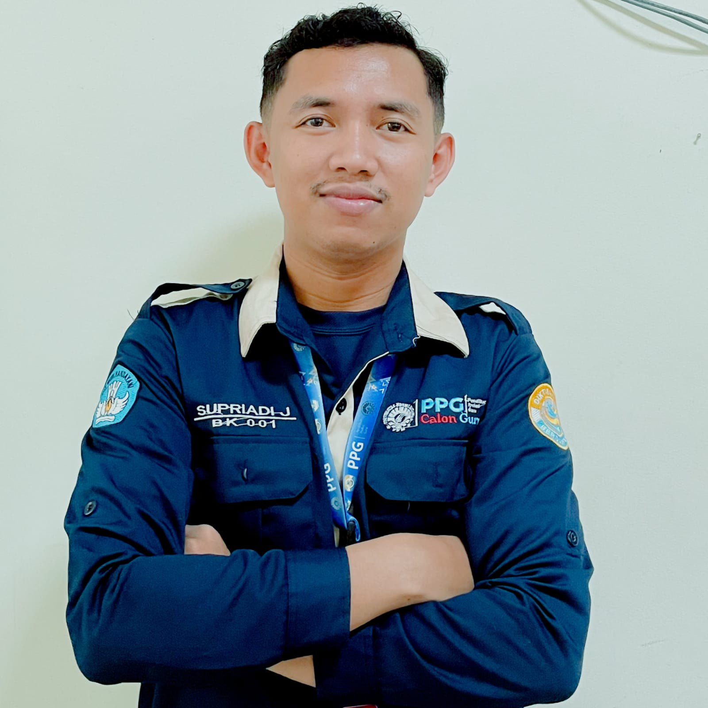

Dokumentasi komprehensif 3 Siklus layanan Bimbingan dan Konseling yang berpusat pada peserta didik, inovatif, dan terintegrasi TPACK.

[Supriadi J]
Mahasiswa BK PPG Calon Guru
Informasi Akademik & Kontak
NIM Mahasiswa
[2590204950888]
LPTK Penyelenggara
[Universitas Negeri Makassar]
Sekolah Mitra (PPL)
[MTs Negeri 1 Kota Makassar]
Guru Pamong
[Hj. Nurhana, S.Pd., M.Pd]
Dosen Pembimbing
[Prof. Dr. Abdullah Pandang, M.Pd]
Email
[supriadituratea@gmail.com]
Contact Person
[+62 896-5382-8173]
Status PPL Terbimbing
Selesai
1. Perencanaan
RPL Bimbingan Klasikal pada berbagai topik yang disusun menggunakan asesmen kebutuhan dan pendekatan inovatif.
2. Pelaksanaan
Dokumentasi pelaksanaan layanan dan konseling sebagai bukti penguasaan keterampilan dasar BK.
3. Evaluasi
Analisis hasil instrumen evaluasi proses & hasil beserta refleksi untuk perbaikan berkelanjutan.
Profil & Filosofi
Landasan berpikir dalam memberikan layanan Bimbingan dan Konseling.
Moto Pelayanan
"Membantu peserta didik menemukan versi terbaik dari dirinya melalui penerimaan tanpa syarat, empati, dan inovasi layanan yang berpusat pada solusi."
Fokus Pengembangan
BIDANG PRIBADI
Pembentukan karakter (akhlakul karimah), pemahaman perubahan fisik/psikologis (pubertas), dan regulasi emosi siswa yang cenderung labil.
BIDANG SOSIAL
Pengembangan keterampilan komunikasi, etika pergaulan remaja, serta menciptakan lingkungan madrasah yang aman dan bebas dari perundungan.
BIDANG BELAJAR
Transisi pola belajar dari tingkat dasar ke menengah, pengelolaan waktu, dan penumbuhan motivasi berprestasi di tengah banyaknya mata pelajaran MTs.
BIDANG KARIER
Penyadaran awal (career awareness) mengenai minat, bakat, potensi diri, serta pengenalan jalur pendidikan lanjutan setelah lulus MTs.
Asesmen Komprehensif
Penyusunan instrumen AKPD dan sosiometri digital yang valid.
Tentang Portofolio
E-Portofolio ini merupakan galeri artefak digital yang mendokumentasikan kinerja selama Praktik Pengalaman Lapangan (PPL) PPG.
Setiap siklus dirancang dengan mengikuti kaidah PTK/PTBK (Perencanaan, Tindakan, Observasi, dan Refleksi). Seluruh perangkat layanan disusun berorientasi pada Higher Order Thinking Skills (HOTS) untuk melatih siswa berpikir kritis dalam menyelesaikan masalah pribadi maupun karir.
Latar Belakang & Asal Daerah
Saya berasal dari Kota Makassar, kota terbesar di Indonesia Timur yang dikenal sebagai "Pintu Gerbang Indonesia Timur." Makassar memiliki keunikan budaya yang kaya, mulai dari semangat siri' na pacce (harga diri dan empati) yang menjadi falsafah hidup masyarakat Bugis-Makassar, kuliner legendaris seperti coto Makassar dan pallubasa, hingga keindahan Pantai Losari yang menjadi ikon kota.
Semangat dan ketangguhan masyarakat Makassar inilah yang menjadi fondasi karakter yang saya bawa dalam perjalanan menjadi seorang guru Bimbingan dan Konseling yang berempati, tangguh, dan berdedikasi tinggi.
[Pelaksanaan layanan pada Siklus 1 berjalan dengan baik sesuai alur Rencana Pelaksanaan Layanan (RPL) dengan memanfaatkan model pembelajaran kontekstual. Hal positif yang terlihat adalah tingginya keaktifan dan antusiasme siswa dalam kerja kelompok, serta terciptanya ruang kelas yang aman dan terbuka bagi siswa untuk saling berbagi sudut pandang. Selain itu, komitmen untuk memposisikan diri sebagai pendengar aktif dan sahabat siswa berhasil membangun kedekatan emosional yang baik selama kegiatan berlangsung.]
Kendala / Kekurangan
[Kendala utama yang dihadapi dalam siklus ini adalah manajemen waktu yang belum optimal, khususnya proses transisi dari penyampaian materi ke diskusi kelompok yang menyita waktu cukup lama. Akibatnya, durasi pengerjaan kartu kasus menjadi habis sebelum selesai sepenuhnya, dan sesi penarikan kesimpulan akhir terkesan tergesa-gesa. Di samping itu, kontrol kelompok masih cenderung didominasi oleh guru BK dan ada kalanya siswa di barisan belakang sempat kehilangan fokus di pertengahan sesi.]
Tindak Lanjut
[Sebagai langkah perbaikan ke depan, saya akan menyusun estimasi waktu per kegiatan secara lebih ketat dan fleksibel, terutama saat pembagian durasi kerja kelompok dan pengisian kartu kasus. Saya juga akan mengintegrasikan media pembelajaran interaktif untuk menjaga fokus siswa dan menerapkan pendekatan personal non-verbal (seperti berkeliling kelas) guna memastikan seluruh siswa terlibat aktif. Terakhir, saya berkomitmen meningkatkan kemampuan komunikasi kelompok agar dinamika bimbingan berpusat pada siswa secara seimbang.]
[Pelaksanaan layanan bimbingan kelompok berjalan sistematis sesuai tahap RPL dan berhasil menciptakan ruang diskusi yang aman melalui penerapan asas kerahasiaan. Penggunaan media kartu studi kasus kontekstual efektif menstimulasi empati dan kemampuan problem-solving siswa, sementara aktivitas ice breaking dan pendekatan konselor yang adaptif mampu meningkatkan keterlibatan aktif siswa, yang diakhiri secara konkret melalui penyusunan komitmen tertulis berupa kartu "Janji Sosial".]
Kendala
[Kendala utama yang dihadapi adalah fokus konselor yang masih sering terikat pada layar laptop sehingga mengurangi kontak mata dengan siswa, serta adanya beberapa sub-langkah kecil dalam RPL yang tidak sengaja terlewatkan. Selain itu, dinamika kelompok masih cenderung didominasi oleh Guru BK (teacher-centered), komunikasi verbal terkadang masih terbata-bata, dan kondisi fisik konselor yang kurang prima di lapangan sedikit memengaruhi ketangkasan serta responsivitas dalam mengelola diskusi.]
Tindak Lanjut
[Langkah tindak lanjut ke depan adalah meningkatkan penguasaan modul/RPL secara mendalam sebelum layanan dimulai untuk meminimalisasi ketergantungan pada laptop dan memastikan seluruh sintaks terlaksana. Konselor juga berkomitmen mengembangkan teknik fasilitasi kelompok yang berpusat pada siswa (student-centered), melatih komunikasi verbal yang lebih baku namun tetap hangat, melakukan monitoring berkala terhadap realisasi kartu "Janji Sosial" siswa, serta lebih disiplin menjaga kebugaran fisik demi performa layanan yang optimal.]
[Pelaksanaan layanan bimbingan klasikal pada Siklus 3 ini berjalan dengan sangat runtut dan berhasil memenuhi seluruh urutan sintaks yang telah direncanakan di dalam RPL berbasis model pembelajaran kontekstual. Selama proses layanan berlangsung, tercipta atmosfer kelas yang aman, nyaman, dan inklusif sehingga memicu antusiasme serta keterlibatan aktif siswa secara total. Siswa tampak sangat terbuka, responsif, dan bersemangat, baik saat berdinamika dalam kelompok maupun ketika mengeksplorasi ragam keterampilan sosial yang diberikan.]
Kendala
[Kendala utama yang muncul dalam siklus ini terletak pada aspek manajemen alur kegiatan, di mana proses transisi dari penyampaian materi menuju sesi diskusi kelompok menyita waktu lebih lama dari estimasi awal. Hal tersebut berdampak pada tahap penarikan kesimpulan di akhir layanan yang terpaksa berjalan dengan sedikit tergesa-gesa. Selain itu, pengelolaan kelompok sesekali masih terasa agak kaku karena keterbatasan kendali akibat berpatokan pada perangkat laptop, yang kemudian memicu penurunan fokus pada beberapa siswa di barisan belakang pada pertengahan sesi.]
Tindak Lanjut
[Sebagai langkah perbaikan, rancangan RPL berikutnya akan memuat pembagian alokasi waktu per aktivitas yang jauh lebih ketat namun tetap fleksibel untuk mengantisipasi keterlambatan transisi. Guna menjaga konsentrasi seluruh kelas secara merata, guru akan lebih aktif bergerak mengitari area belakang kelas melalui pendekatan mobile proximity. Terakhir, integrasi media teknologi interaktif seperti platform Padlet akan dioptimalkan demi memfasilitasi keterlibatan aktif dan ruang berpendapat bagi siswa yang cenderung introver.]
Refleksi Akhir PPL
Sintesis perjalanan dan Rencana Tindak Lanjut (RTL)
1. Pengalaman Paling Bermakna
[Melalui tiga siklus ini, saya belajar bahwa teknologi (TPACK) bukanlah pengganti kehangatan seorang konselor. Namun, ketika teknologi dan ilmu pedagogi BK yang tepat disatukan dengan ketulusan hati, ia menjadi katalisator luar biasa yang mampu mengubah ruang BK dari tempat yang dihindari menjadi ruang aman (safe space) yang paling dirindukan oleh siswa.]
2. Best Practice (Metode STAR)
[Aksi nyata pelaksanaan layanan klasikal "Seni Berteman" menggunakan model pembelajaran kontekstual dan metode sociodrama (bermain peran) di Siklus 3 terbukti berhasil menciptakan ruang kelas yang aman dan inklusif. Meskipun menghadapi tantangan berupa kekakuan guru dalam mengelola kelompok serta fluktuasi fokus siswa di barisan belakang, tantangan tersebut sukses diatasi melalui ice breaking "Tali Pertemanan" dan aktivitas saling bertukar "Surat Apresiasi". Refleksi hasil menunjukkan seluruh sintaks RPL terlaksana secara runtut dengan dampak peningkatan empati dan partisipasi aktif siswa secara drastis, dengan rencana tindak lanjut berupa pengetatan alokasi waktu transisi serta penerapan strategi mobile proximity pada siklus berikutnya."]